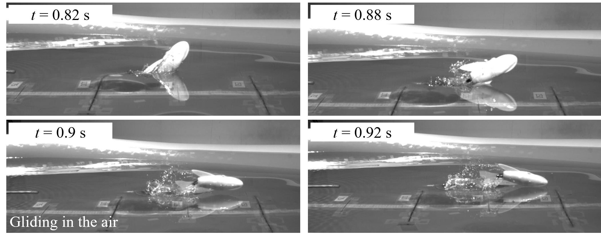

|
I am a Ph.D candidate at Florida Institute of Technology, USA, where I work on Machine Learning, Computer Vision, Generative models, and Reinforcement Learning for Robotics. Previously, I was a research assistant at Bioinspired System Laboratory. I received my Master of Science degree in Smart Vehicle Engineering from Konkuk University, South Korea, in 2022, and my B.S. in Mechanical Engineering from Ho Chi Minh City University of Technology and Education (HCMUTE), Vietnam, in 2019. CV / Google Scholar / GitHub / LinkedIn |

|
|
My research interests include Deep Learning, Robotics, VLMs, and LLMs, especially their applications in Medical Imaging Diagnosis. Please check my latest publications here. I am happy to collaborate with you in AI related projects. Please kindly send me an email (hanhpt.phamtan@gmail.com). |
|
● [Mar. 2024] The College's Award for Outstanding Graduate Student of the Year, Florida Tech, 2023. ● [Jan. 2023] Ph.D. Fellowship. ● [Apr. 2022] Best Paper Award at the 18th International Conference on Intelligent Unmanned Systems (ICIUS) at Tokushima University, Japan, 2022. ● [Sep. 2020] Master Fellowship. ● [2018 - 2019] Merit Scholarships for outstanding students at Ho Chi Minh City University of Technology and Education. |
|
● Reviewer, Systems Science & Control Engineering ● Reviewer, Earth Science Informatics ● Reviewer, IEEE Access ● Reviewer, Scientific Reports ● Reviewer, 2024 IEEE International Conference on Systems, Man, and Cybernetics (IEEE SMC 2024) ● Reviewer, 2023 IEEE International Conference on Systems, Man, and Cybernetics (IEEE SMC 2023) ● Reviewer, 2022 IEEE 3rd International Conference on Human Machine Systems (ICHMS) |
Journal Papers and Preprints
● [Jan. 2025]
Pham, T.H., Burgers, T.A., and Nguyen, K.D., 2025.
● [Dec. 2024]
Pham, T.H., Hoang-Nam Le, Phu-Vinh Nguyen, Chris Ngo, and Truong-Son Hy, 2024.
● [Oct. 2024]
Pham, T.H., Aikins G., Truong T., and Nguyen, K.D., 2024.
● [Sep. 2024]
Khai Le-Duc, Phuc Phan, Tan-Hanh Pham, Bach Phan Tat, Minh-Huong Ngo, Truong-Son Hy, 2024.
● [Sep. 2024]
Pham, T.H., Li X., and Nguyen, K.D., 2024.
● [Aug. 2024]
Khai Le-Duc, Quy-Anh Dang, Tan-Hanh Pham, and Truong-Son Hy.
● [July 2024]
Le-Duc, Khai, Ryan Zhang, Ngoc Son Nguyen, Tan-Hanh Pham, Anh Dao, Ba Hung Ngo, Anh Totti Nguyen, and Truong-Son Hy.
● [Apr. 2024]
Pham, T.H. and Nguyen, K.D., 2024.
● [Jan. 2024]
Pham, T.H., Acharya, P., Bachina, S., Osterloh, K. and Nguyen, K.D., 2024.
● [Jan. 2023]
Pham, T.H., Nguyen, K. and Park, H.C., 2023. Conference Papers
● [Nov. 2022]
Nguyen, K., Pham, T.H. and Park, H.C., 2022.
● [Apr. 2021]
Pham, T.H., Phan, H.V. and Park, H.C., 2021.
● [Nov. 2021]
Pham, T.H., and Park, H.C., 2021. |
|
This study addresses the challenge of selecting optimal soil sampling locations within agricultural fields by leveraging deep learning techniques. In this project, we utilize data from local farms, incorporating features such as aspect, flow accumulation, slope, NDVI, and yield for training. We propose two methods: one employing a convolutional neural network (CNN) and another based on a deep learning framework utilizing transformers and self-attention. Our framework achieves impressive results on the testing dataset, outperforming the CNN-based method significantly. This work not only introduces a novel approach to soil sampling but also lays the groundwork for applying data science and machine learning to other agricultural challenges. This project is supported from USDA National Institute of Food and Agriculture, USA. |

General pipeline of the soil sampling site selection tool using deep learning and thresholding techniques.
Self-attention mechanism.
|
|
In this study, we address the challenge of enabling a robotic manipulator to complete tasks despite joint malfunctions. Specifically, we develop a reinforcement learning (RL) framework to adaptively compensate for a non-functional joint during task execution. Our experimental platform is the Franka robot with 7 degrees of freedom (DOFs). We formulate the problem as a partially observable RL scenario, where the robot is trained under various joint failure conditions and tested in both seen and unseen scenarios. We consider scenarios where a joint is permanently broken and where it functions intermittently. Additionally, we demonstrate the effectiveness of our approach by comparing it with traditional inverse kinematics-based control methods. The results show that the RL algorithm enables the robot to successfully complete tasks even with joint failures, achieving a high success rate with an average rate of 93.6%. This showcases its robustness and adaptability. Our findings highlight the potential of RL to enhance the resilience and reliability of robotic systems, making them better suited for unpredictable environments. All related codes and models are published online. |

(a) The robot successfully opens the cabinet.

(b) The robot fails to open the cabinet.

(c) The robot works properly.

(d) The robot fails to follow the expected trajectory when one of the joints is broken.
|
|
In this project, we address the increasing importance of automated medical image segmentation in clinical practice, driven by the need for precise diagnosis and personalized treatment plans, alongside advancements in machine learning, notably deep learning. While CNNs have been dominant, Transformer-based models are gaining recognition for computer vision tasks. In this study, we propose a hybrid model, seUNet-Trans, combining UNet and Transformer architectures for medical image segmentation. In their approach, UNet serves as a feature extractor, followed by a bridge layer connecting UNet and Transformer sequentially. They employ pixel-level embedding without position embedding vectors to enhance efficiency and integrate spatial-reduction attention in the Transformer to reduce computational complexity. Extensive experimentation on seven medical image segmentation datasets, including polyp segmentation, demonstrates the superiority of our proposed seUNet-Trans network over several state-of-the-art models. |
The architecture of our proposed method (seUNet-Trans).
The testing result on the Glas dataset.
|
|
In this project, we explore the significance of precision devices in agriculture and the role of deep learning in enhancing their performance, specifically focusing on spray systems. Due to the limitations of collecting sufficient training data, the study proposes using generative adversarial networks (GANs) to create artificial images of droplets. By training the GAN model with a small dataset from high-speed cameras, it generates high-resolution images effectively. Leveraging these synthetic images, we proposed a droplet detection model that outperforms traditional methods, achieving a notable increase in mean average precision (mAP). This approach represents a pioneering use of generative models for augmenting droplet detection and contributes to addressing data scarcity challenges in precision agriculture, ultimately promoting efficient and sustainable agricultural practices. This project is supported from USDA National Institute of Food and Agriculture, USA. |

Eperimental setup of a spray system for droplet generation.

Droplet detection.
|
|
CNN-Transformer based model for 3D Brain Tumor Segmentation In this paper, we introduce a novel methodology that combines convolutional neural networks (CNNs) and transformers to improve the accuracy of segmenting brain tumors in three-dimensional (3D) volumes. Our hybrid architecture utilizes CNNs for initial volume predictions and then transforms them into sequence-to-sequence segmentation predictions using transformers, aiming to enhance both accuracy and robustness while capturing global contextual information. The model is validated on a dataset from Harvard Medical School and Brats datasets, demonstrating effective segmentation of 3D brain tumors. We propose a promising avenue for advancing 3D brain tumor segmentation, contributing to the field of medical image analysis research. The source code is available on GitHub for further exploration. |
Using FreeView to visualize a brain volume which includes Flair and a brain tumor.
|
|
In this work, we developed a robotic flying fish, KUFish, capable of fast swimming and leaping out of water, mimicking natural flying fish. The robot's thrust is naturally generated by a tail-beating mechanism driven by a DC motor and various linkages, achieving dynamic stability through symmetric mass distribution, positive buoyancy, and a lower center of gravity. Experimental results showed KUFish swimming 0.68 m at 1.35 m/s and leaping out of water in 0.68 s. In addition, we also developed a dynamic model to predict its swimming behavior, with findings indicating potential for future flying-fish-like robots. |

Snapshots of the KUFish’s leaping experiment from the side view.

Robotic flying fish dynamics.
|
|
Autonomous Navigation with Deep Reinforcement Learning In this project, we aim to develop reinforcement learning algorithms for autonomous navigation. Detailed descriptions and results will be available soon. |
Husky robot.
|